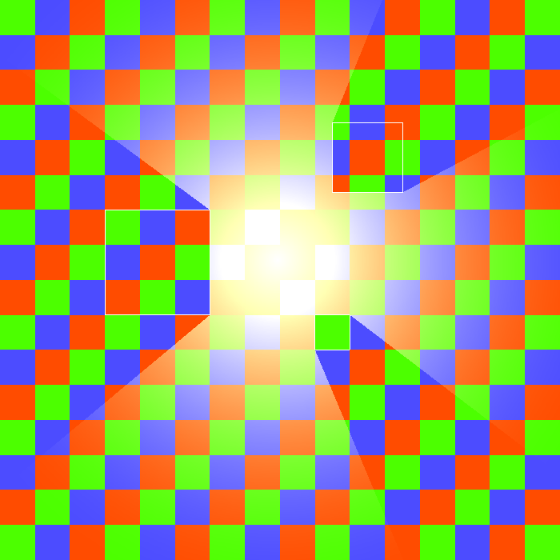

|
Candle v1.0
2D lighting for SFML
|
|
Candle v1.0
2D lighting for SFML
|
Light sources alone can become somewhat noisy in the scene. They make much more sense when they exist within an area of darkness, which they illuminate. For this, Candle provides the class candle::LightingArea, that operates in two modes: FOG and AMBIENT. We will focus on the first one right now.
A lighting area in FOG mode behaves as a mask, and when objects candle::LightSource are drawn to it, they make transparent the illuminated polygon, taking into account its intensity and the fade flag. You can think of this class as a wrapper to a sf::RenderTexture, as you have to use clear, draw and display functions. Let's see a minimalistic example:
This time the fade flag is set to false to make the contrast stronger. The previous code results in an image hidden by a layer of darkness, revealed under the light of the cursor.
Also, note that the light is not drawn to the window. If we did that, then the light itself could cover the image below. This doesn't mean that there aren't cases when you will want to draw the light both to the lighting area and the window, but you would have to experiment and adjust the range and intensity parameters, to obtain the desired effect.
In the last example we've used plain color to define the fog. However, it is possible to use a texture, instead. In the previous example, we would have to change the piece of code to create the lighting area by the following:
and we would have this result:
This example also allows us to illustrate how to manage size. An object candle::LightingArea uses a sf::RenderTexture internally, and to avoid destroying and creating a potentially heavy resource repeteadly, it is created only upon construction or when using candle::LightingArea::setAreaTexture. So, if we want to change the size of the area (in this case we want to adjust it to the size of the window), the only way is to scale it.
For now we have been calling candle::LightingArea::clear before any draw call. If we don't do this, then the darkness layer isn't restored. This way, we can have the effect of permanently revealing what is under it.
The second operation mode of candle::LightingArea is AMBIENT. Its behaviour is rather simple, as it acts as a mere additive layer. Be it a plain color or a texture, they are overlayed to the layer below. Drawing lights to it has no effect, but as light sources are also drawn in an additive manner, then lights within the area will appear to have more intensity.
 No LightingArea |  FOG mode (Color black, medium opacity) |  AMBIENT mode (Color yellow, low opacity) |